3주차 L6~L7
Recap
L6. Training Neural Networks I
- Neural Network 디자인 시 고려해야할 사항들
- Activation Function
- Weight initialization
- Preprocessing training data
- Learning rate
- Overfitting 방지를 위한 Regularization
Activation Functions
- Activation Function의 역할을 다시 떠올려보자
- 특정 레이어의 노드가 이전 레이어의 모든 노드 값 * weight을 받아 계산될 때 non-linear한 패턴 학습을 가능하도록 하는 fun
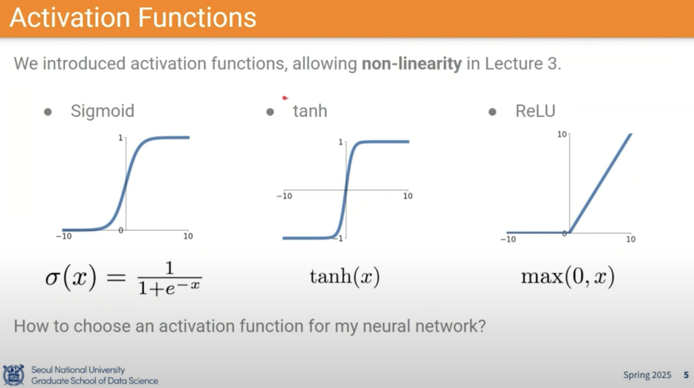
- 상황에 따라 Activation function을 선택해보자
- Activation function 설정 시 고려 사항
| Fun. | Sigmoid | tanh | ReLU (Rectified Linear Unit) |
|---|---|---|---|
| + | - [0,1]의 range로 확률적 해석 가능 | - [-1,1] range로 Not zero-centered Output 문제 해결(0-centered) | - Saturation 문제 해결 |
| - | - exp 연산에 시간 소요 - Saturation - Not zero-centered Output | - Saturation | - Not zero-centered Output - x=0에서 미분 불가능 - Dead ReLU problem |
| 마지막 Layer 아닌 이상 Sigmoid 쓰지 마라 | 중간 레이어에서 쓰지 마라 | ReLU 사용해 최적화 시킨 후 Leaky, ELU 사용으로 성능 개선이 가능 |
- Killing gradients (Saturation)
- Sigmoid Gradient graph
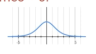
→ Backprop. 시 Upstream gradient 받아서 local grad.(dout) * w(?) 로 Downstream gradient(dx) 를 출력해야하는데 Input(x)가 커지면(abs) 왼쪽 그래프 처럼 Gradient가 0에 수렴함 (Gradient가 죽는다)
- tanh 의 경우도 시그모이드 확장판이어서 이러한 문제 발생
- \(tanh(x)= 2σ(2x)-1\)
- ReLU
- 양수 → 기울기 수렴 x 음수 → 모두 0
- 연산에 효율적
- Exp 없음 + 음수일 경우 미분 불필요 → Convergence도 빠르다
- 연산에 효율적
- 양수 → 기울기 수렴 x 음수 → 모두 0
- Sigmoid Gradient graph
- Not zero-centered Output
- 만약 Input data가 모두 양수로 구성된 데이터(e.g image…) 라면 Local grad.가 항상 양수가 된다
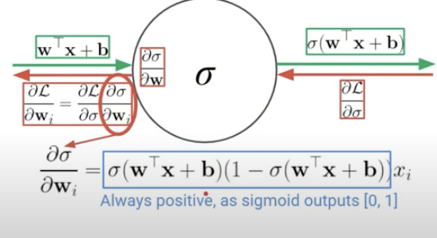
- Local grad. = 하늘색 박스 x \(x_i\)
- 하늘색 박스: (+) * (+) → (+)
- \(x_i\) : 양수 가정
→ Backprop. 시 Downstream grad.부호 == Upstream grad. 부호
→ 다시 말해 Sigmoid 사용 시 Upstream gradient의 부호가 계속 똑같이 유지된다
→ gradient descent가 되지 않는다
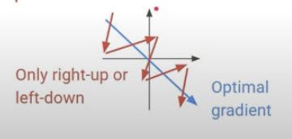
- X → 양수 방향 y → 음수 방향일 때 비효율적 업데이트가 일어날 수 있음
** Batch size >1 )
- Dead ReLU problem
- Weight random init. 시 음수로 되면 계속 0으로 업데이트 됨
- ReLU 사용 시 initial output을 양수를 사용해야함. (평균이 양수가 되도록)
- Additional
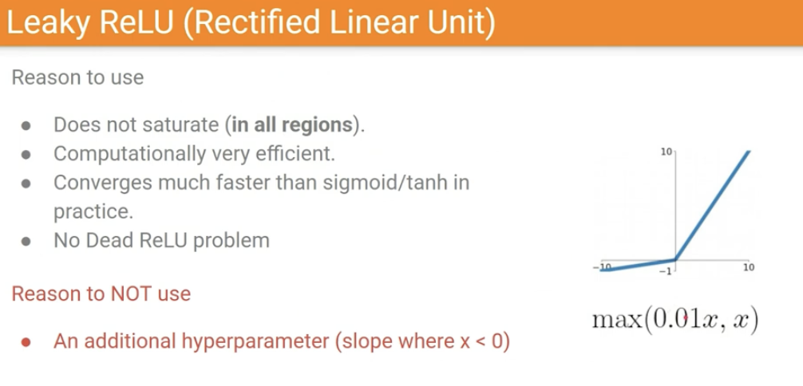
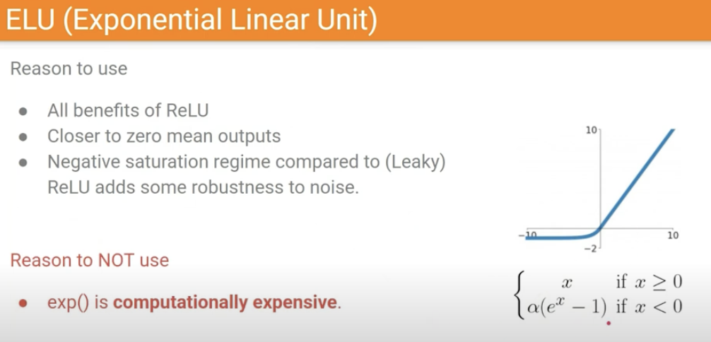
- 기본적으로 ReLU 사용해 최적화 시킨 후 Leaky, ELU 사용으로 성능 개선이 가능할 수 있다
Data Preprocessing
- 모든 Input이 양수일 경우, weight 학습이 불안정해지고, bias를 크게 줘야하는 단점들이 있다
- Basic processing
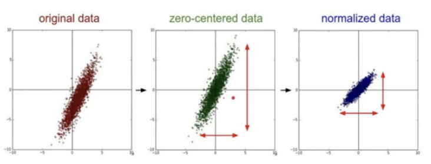
X -= np.mean(X, axis=0) # Zero-centering X /= np.std(X, axis=0) # Normalization - PCA & Whitening
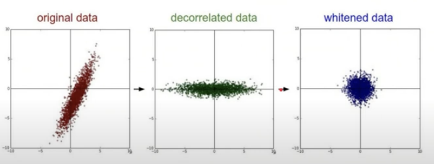
- PCA → Zero-centering + Axis aligning
- decorrelation : 분산을 가장 잘 설명하는 축이 x1이 되도록
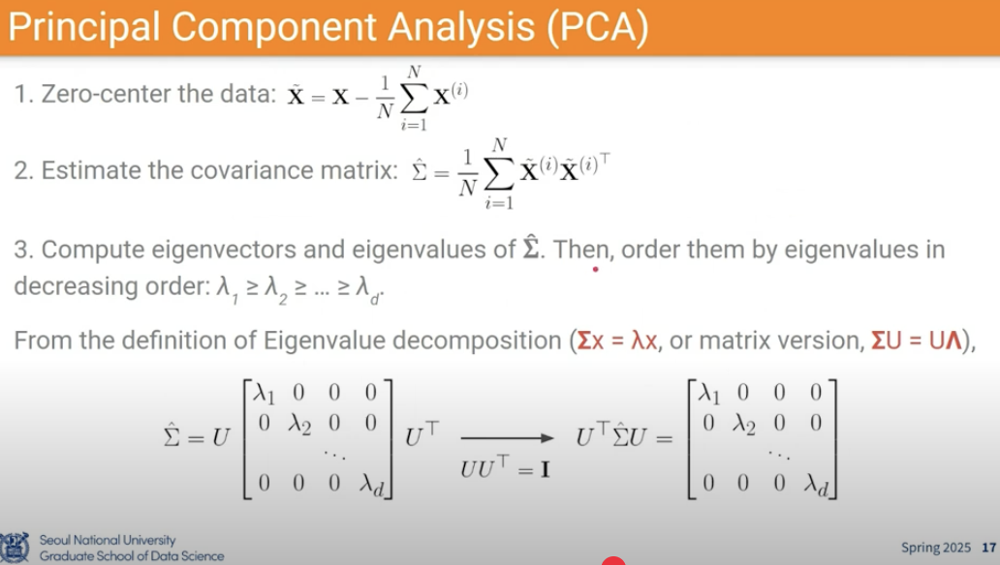
- Covariance matrix 상 대각선 축이 variance 값, 나머지 값들이 covariance
- Eigenvalue decomposition
- decorrelation : 분산을 가장 잘 설명하는 축이 x1이 되도록
- Whitening → 분산으로 나눠 label에 대해서만 학습 가능하도록 함
- PCA → Zero-centering + Axis aligning
Data augmentation
- 데이터가 많을 수록 robust하고 성능이 좋아질테니 있는 데이터를 최대한 활용하기 위해 아래와 같이 동일한 label을 가진 이미지들을 생성한다
- Classifier가 invariant할 수 있는 변화들을 추가 데이터로 학습시킴
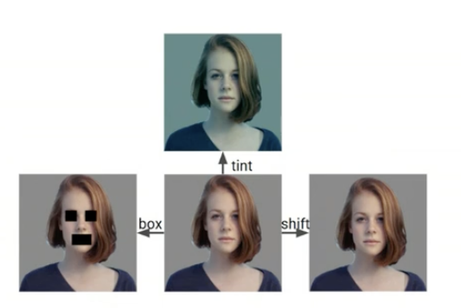
- 좌우 대칭, Random crop, Scaling
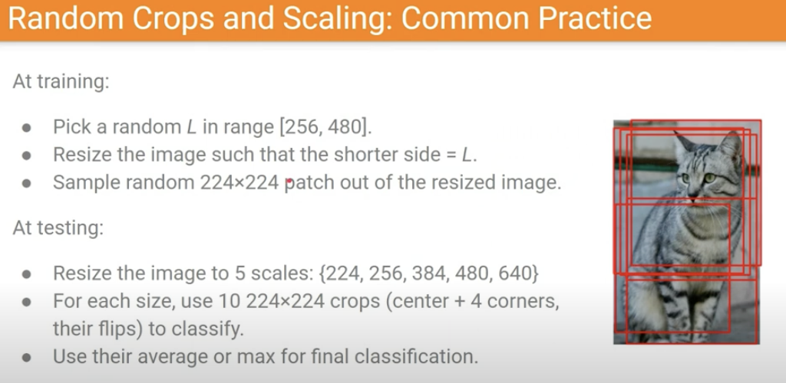
- Color jitter
- Hue(색상), Saturation(채도), Lightness(명도) (RGB와 변환 가능)
Misc. 변환 수식
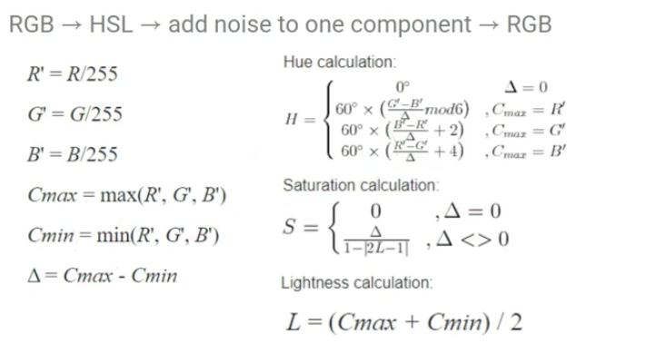
- RGB가 아닌 Saturation 값 등 조정으로 augmentation
- Tensorflow, pyTorch에서 다 제공한다
- Hue(색상), Saturation(채도), Lightness(명도) (RGB와 변환 가능)
- 좌우 대칭, Random crop, Scaling
Weight initialization
- tanh weight initialization
- Small Gaussian Random
- 보통은 Gaussian 분포로 random 하게 구성을 하는데
W= 0.01 * np.random.randn(d_in, d_out)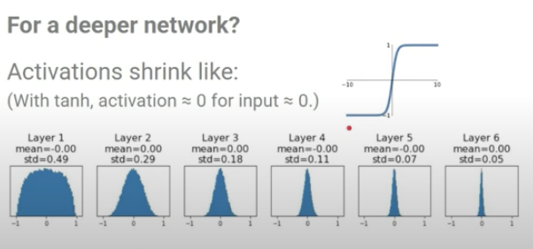
- 분포가 0으로 수렴하게 됨
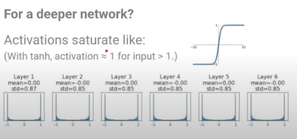
- -1, 1로 Saturation
→ 적당한 값을 계산해보자
- 보통은 Gaussian 분포로 random 하게 구성을 하는데
- Xavier Initialization
- 입력과 출력에서 분산이 비슷하도록 가중치를 초기화
W= np.random.randn(d_in, d_out)/np.sqrt(d_in)- 표준편차로 나눠주기
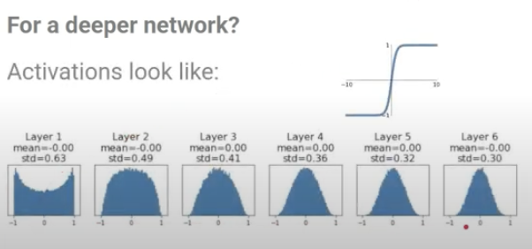
- 증명
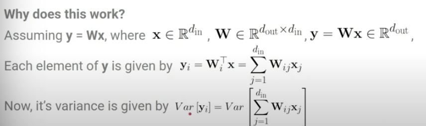
- i.i.d assumption
- W 와 x 가 독립이라는 가정 (학습 초기에는 가능할 수 있음)
- W와 x의 분포가 유사하다는 가정 (정규분포)
⇒ \(Var[y_i]= \)
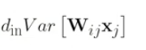
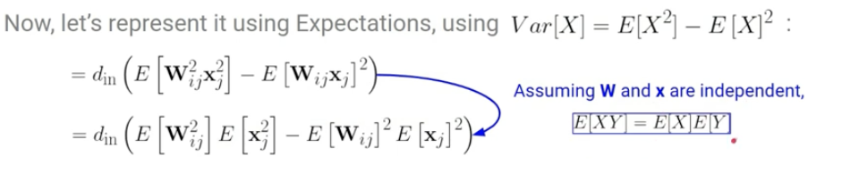
- W, x의 평균이 0이라는 가정 하에
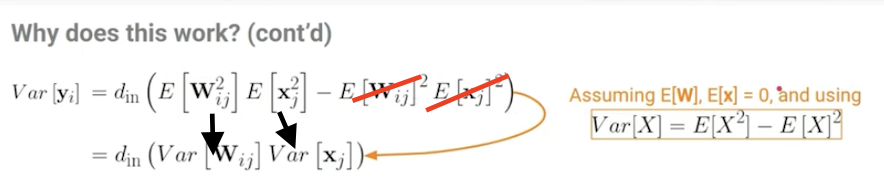
→ Var(W_ij) 1/d_in 으로 할 경우 \(Var[y_i]= Var[x_j]\) 가 되니까 input의 variance와 output의 variance가 같아진다
→ 다시 말해 레이어를 반복해도 분산이 유지될 것 이다
- i.i.d assumption
- ReLU weight initialization
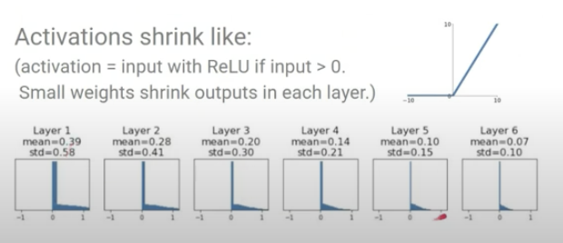
위와 같이 유사하게 식 전개를 하면..
W= np.random.randn(d_in, d_out) * np.sqrt(2/d_in)
Learning Rate Schenduling
- Learning Rate를 어떻게 선택할 것인가?
- low lr → 파란색
- high lr → 초록색
- 최적이 아닌 점에서 수렴할 가능성 있음
- 최악의 경우 노란색
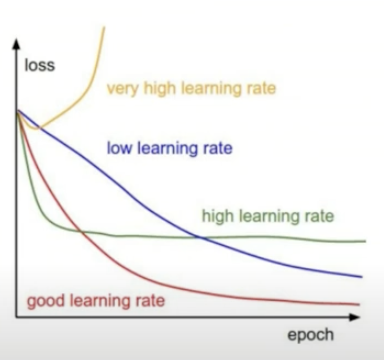
- Learning Rate Decay
- Constant하게 하지 않고 후반으로 갈 수록 값이 작아지도록
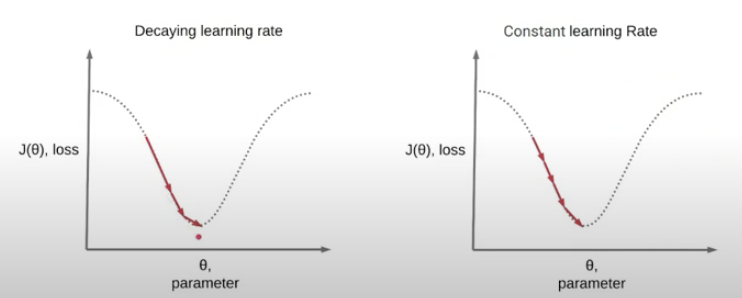
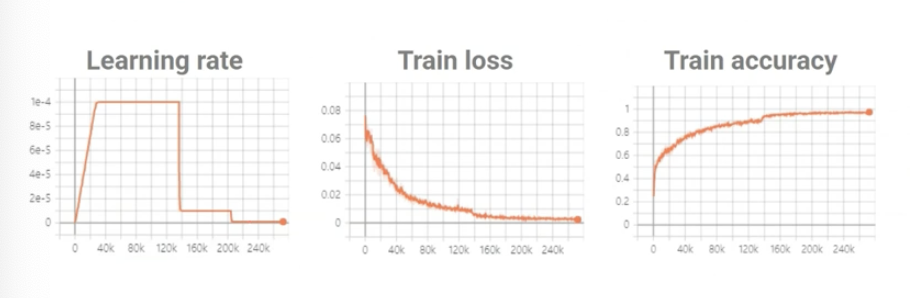
- Decay 예시 : 50%에서 Learning Rate 대폭 줄였을 때, loss, accuracy 오른다
- 학습 초기부터 learning rate을 너무 크게 주면 불안정하다
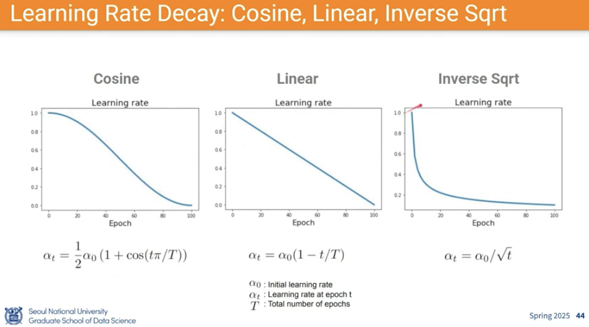
- 이런 모델링도 가능
- Constant하게 하지 않고 후반으로 갈 수록 값이 작아지도록